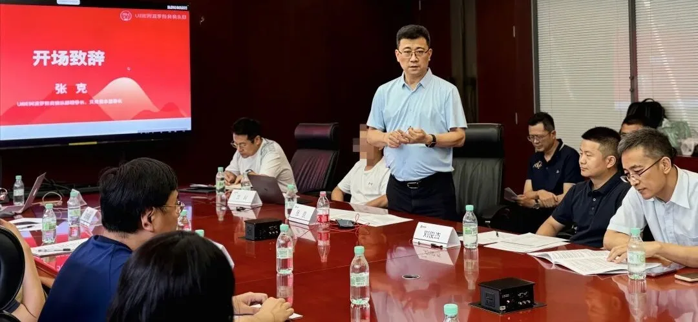
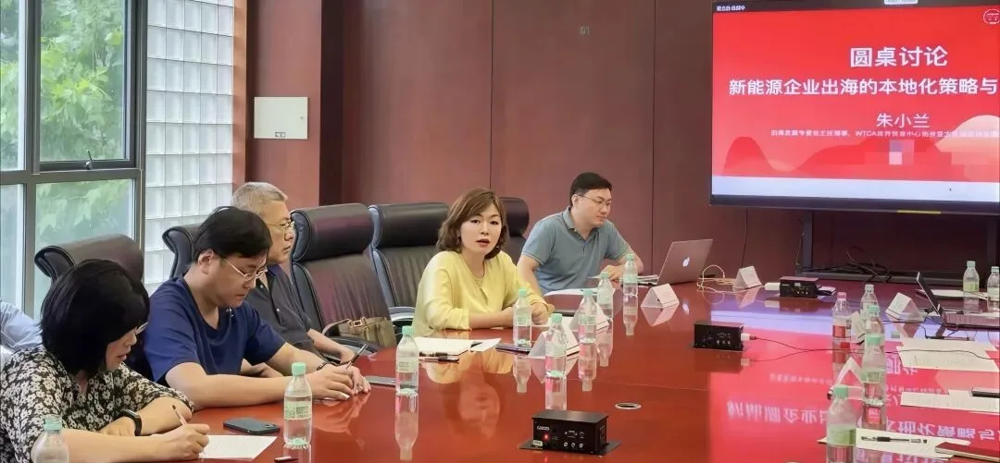

At a closed-door new-energy capital salon with 30 participants, most attendees focused on new-energy technologies and overseas market opportunities. A sector lead for new energy from a top-tier global investment bank based in Hong Kong brought a different perspective: international investors already recognise the technical strengths of Chinese new-energy enterprises, yet cross-border financing is very often held back by corporate-governance transparency. "Whether an investment is worthwhile" and "whether investors dare to invest" are two separate matters.
Thirty professionals from industry and capital circles attended this closed-door new-energy capital salon, where discussions centred on how Chinese new-energy enterprises can engage with international capital markets.
Also present at the salon were Blake Zhang and Xiaolan Zhu from WTC Singapore. At the opening, nearly all corporate representatives centred their remarks on technical barriers, production capacity and overseas project track-records. A widespread assumption took shape: compelling technical strength alone would draw interest from international investors.
We expected the dialogue to move along familiar lines — technical advantages, overseas market potential and project valuation. However, the sector lead covering new energy from a top-tier global investment bank based in Hong Kong offered insights that challenged conventional thinking.
Note: The guest participated in this closed-door salon in a personal capacity. All remarks represent personal views only and do not reflect the position of their employer, whose institutional identity will not be disclosed publicly.
He laid out a sober industry reality: international capital markets broadly acknowledge the technical competence of China's new-energy sector. Overseas institutions do not question our products, solutions or supply-chain capabilities.
His remarks immediately sparked on-site debate. Drawing from practical industry experience, Blake Zhang offered follow-up observations that resonated with many new-energy practitioners in the room.

"Many new-energy companies pour effort into products and production capacity. But for overseas capital-market access, governance is not an afterthought to be patched up later — it must be built upfront as a foundation."
— Blake Zhang, Chairman, WTC SingaporeQuite a few companies tend to finalise technology, capacity and order books first, and only adjust internal governance later to satisfy overseas investors. Cross-border capital conducts pre-emptive evaluation and seldom tolerates governance gaps even when business performance is strong.
Building on this thread, Xiaolan Zhu shared observations drawn from extensive real-world Asia-Pacific cross-border investment and financing cases.

"In Asia-Pacific cross-border investment practice, technology gets you through the door, but governance and compliance earn you genuine investor trust — a point consistently underestimated by domestic tech-driven industries."
— Xiaolan Zhu, Chief Representative & CEO, WTC SingaporeAs we reviewed multiple real-world new-energy global-expansion cases, it became clear that the industry spends most of its energy refining technical narratives for foreign audiences, while under-investing in governance frameworks credible to overseas capital. The gap between the two is far larger than most companies anticipate. Reflecting on the full exchange, I also reached my own candid insight.
"We tend to convince outside capital with technology, order books and production capacity. Cross-border risk assessment, however, frequently hinges on governance factors beyond technology — a vital lesson many global-bound enterprises miss."
— Bruce Dong, Secretary-General & COO, WTC SingaporeThese perspectives challenged many participants' ingrained mindsets. Industrial operators naturally assume that leading-edge technology plus signed overseas orders should automatically unlock international capital support. Cross-border investment-decision workflows are far more complex than industrial stakeholders often appreciate. Technology underpins commercial value, while corporate governance, disclosure rules and decision-making mechanisms form the risk-assessment baseline for foreign investors. Even with outstanding technical credentials, opaque governance will cause institutional investors to hold back, despite recognising commercial opportunity.
No investment term sheets or immediate cooperative deals emerged from this thirty-person closed-door salon. Even so, the conversation has genuinely reshaped how I engage with enterprises planning global expansion.
Previously, when discussing global strategies with new-energy firms, I would start by asking about core technical advantages and overseas footprint. Since this salon, I re-order my questions. For enterprises targeting international capital, I prioritize asking: Is the board structure intelligible to foreign investors? Are decision-making and disclosure frameworks aligned with cross-border risk-control expectations?
Many enterprises pursuing overseas financing devote nearly all resources to polishing technology and market stories, while neglecting to review whether their governance is fit for cross-border investors. This explains why numerous fundamentally sound projects stall when reaching international financing stages.
That is why we document these salon reflections. Many hidden pitfalls for global expansion never appear in public industry reports; they surface only in closed-door peer exchanges. For WTC ONE-Club members, it is essential to recognise global market opportunities while also understanding the invisible entry barriers seen through international capital's lens.